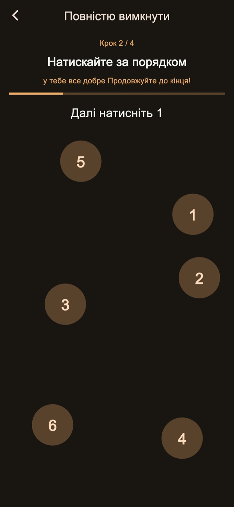
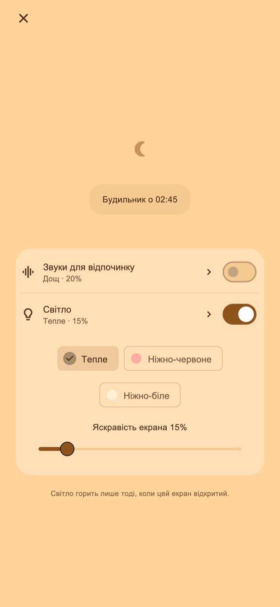

Звуки для відпочинку
Слухайте дощ, хвилі або білий шум. Звук починається лише після вашого ввімкнення й плавно стихає до першого сигналу.
Вібробудильник для короткого сну та після вкладання дитини
Для тих, хто засинає надовго під час короткого відпочинку або вкладаючи дитину.
01Візерунки вібрації
Змінюються тривалість і ритм — вібрація відрізняється від звичних сповіщень. Це незвичне відчуття покликане допомогти помітити будильник і прокинутися.
Короткі імпульси, довгі й часті серії. Оберіть один із чотирьох базових режимів: випадковий, у стилі сповіщень, переважно довгі або переважно короткі. Тривалість та інтервали змінюються. Спробуйте вібрацію до встановлення будильника.
Візерунки вібрації
02Кілька сигналів
Зупиніть лише поточний сигнал, зберігши наступні, або завершіть серію, щоб скасувати решту.
Збереження кількості та інтервалу — функція Преміум.
Кілька сигналів
Завершіть серію після підйому
03Завдання для зупинки
Приклади, числа за порядком, утримання та повторні натискання супроводжують зупинку й відкладення. Стандартні кроки включено. Їх редагування та поєднання потребує Premium.

Нічний екран
Налаштуйте яскравість і вигляд годинника. Можна приховувати зображення після короткої бездіяльності та повертати годинник і кнопки дотиком.
Виберіть тривалість, наприклад 30 хвилин, або час підйому.
Залиште нічний екран відкритим; за бажанням увімкніть звук чи світло.
Виконайте кроки зупинки й завершіть серію, коли встанете.
Заспокійливі звуки та світло
Для короткого сну або вкладання дитини. Вмикайте їх на нічному екрані за потреби.
Слухайте дощ, хвилі або білий шум. Звук починається лише після вашого ввімкнення й плавно стихає до першого сигналу.
Виберіть тепле, блідо-червоне чи м’яке біле світло та налаштуйте яскравість.
Базові функції безкоштовні

Безкоштовно / Premium
Чотири режими вібрації, стандартна зупинка й відкладення, нічний екран, звуки та світло включені. На деяких екранах є реклама.
| Функція | Безкоштовно | Premium |
|---|---|---|
| Візерунки вібрації | ✓ | ✓ |
| Кілька сигналів | Стандартні налаштування | Можна налаштувати |
| Завдання для зупинки | Стандартні налаштування | Можна налаштувати |
| Нічний екран / Звуки для відпочинку / Світло | ✓ | ✓ |
| Створюйте та змінюйте власні вібрації. | — | ✓ |
| Приберіть усю рекламу. | — | ✓ |
Оберіть місячний план або разову покупку. Місячний план поновлюється автоматично; керувати ним і скасувати його можна в налаштуваннях облікового запису магазину. Ціни та умови наведено перед покупкою.
Запитання й відповіді
Для власних вібрацій застосунку залиште нічний екран відкритим після налаштування будильника. Після блокування бічною кнопкою або переходу в інший застосунок вібрацією керує iOS: вибрані ритм і сила не застосовуються. Перевірте дозволи, налаштування вібрації та виконайте перевірку роботи.
Слухайте дощ, хвилі або білий шум. Звук починається лише після вашого ввімкнення й плавно стихає до першого сигналу. Виберіть тепле, блідо-червоне чи м’яке біле світло та налаштуйте яскравість.
Чотири режими вібрації, стандартна зупинка й відкладення, нічний екран, звуки та світло включені. На деяких екранах є реклама. Приберіть усю рекламу. Змінюйте кількість сигналів та інтервал. Редагуйте кроки зупинки й відкладення. Створюйте та змінюйте власні вібрації. Оберіть місячний план або разову покупку. Місячний план поновлюється автоматично; керувати ним і скасувати його можна в налаштуваннях облікового запису магазину. Ціни та умови наведено перед покупкою.
Завантажити
Вібробудильник для короткого сну та після вкладання дитини
Базові функції безкоштовні
iPhone: iOS 26.1+ / Android: 8.0+